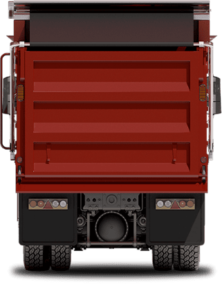

External mount
Published for 8–26 ft dump bodies, with polished aluminum arms and a bolt-on spiral torsion spring assembly. Ask the team to confirm mounting space and clearances.

Precision Tarp product photograph
MANUFACTURING & INSTALLATION / ELGIN, IL
A swing arm system with external or underbody mounting configurations and ground-level operating options.
These are published size ranges, not an automatic fit recommendation. Confirm mounting, clearance and any configuration outside these ranges with the team.
Prepare a product requestInclude dimensions with units, intended use and any existing equipment details. Final fit and price need confirmation.
Original product informationPublished for 8–26 ft dump bodies, with polished aluminum arms and a bolt-on spiral torsion spring assembly. Ask the team to confirm mounting space and clearances.
Published for 12–38 ft dump bodies. The lower arm lengths and spring assemblies vary; use the numbered diagram and part markings when requesting replacements.
ELECTRIC OPERATION
The company lists these motor families. Confirm the correct model, shaft, wiring and compatibility for your setup.
Published 50:1 option
Ask about this optionPublished 60:1 option
Ask about this optionPublished 90:1 option
Ask about this optionHorsepower and warranty descriptions differ between the company’s published pages. Ask the team for the current motor specification and warranty before ordering. These are model options, not verified standalone SKU listings.